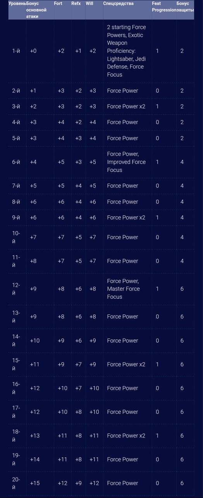

Эти пользователи Силы хранят мир и покой или приносят страдания и разрушения с помощью невероятной силы и оружия.
Эти пользователи Силы не стремятся совершенствовать физическую силу, а тренируют мастерство своей внутренней Силы.

Солдаты встречаются везде: в Республиканской и Имперской Армии и среди охранников Джаббы Хатта, на Корусканте и на планетах Внешнего Кольца. Солдаты не верят ни в Силу, ни в уловки и трюки контрабандистов. Единственное, чему они доверяют - старому-доброму бластеру. Солдаты умеют обращаться с большинством видов вооружения и снаряжения, максимально приспосабливая их для защиты и нападения.
Скауты зачастую обитают на краю цивилизации. Они исследуют затерянные культуры и открывают новые гиперпространственные маршруты, сталкиваются с новыми видами гуманоидов и сражаются с уже известными. Чтобы выполнять свою работу, скауты обладают самыми различными навыками - они смелы и выносливы, они мастера выживания в различными условиях и выслеживания добычи. Вы никогда заранее не можете знать насколько голодна эта замершая пушистая тварь, поэтому скауты должны всегда быть на готове.
Негодяи имеют много обликов: от счастливого игрока до бесчестного убийцы, от «джентельмена удачи» до успешного вора. Они обладают множествов способностей, которые помогают им выжить. Можно быть честным и законопослушным, но при этом иметь в своем распоряжении мало возможностей, а можно быть контрабандистом, имеющим всё, что захочется, умеющим взламывать компьютеры и устранять ловушки.